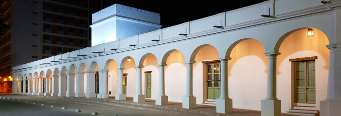
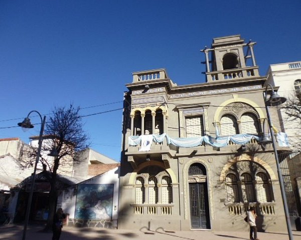

Cabildo de Jujuy

El Cabildo de Jujuy es uno de los edificios más representativos e históricos de la ciudad de San Salvador de Jujuy por su valor arquitectónico y patrimonial. Fue declarado Monumento Histórico Nacional por el Decreto 95.687/1941...
Museo Histórico Provincial Juan Galo Lavalle
Este museo funciona en una casona colonial del siglo XVIII y alberga una valiosa colección de objetos históricos, documentos y mobiliario de la época...
Museo Arqueológico Provincial

El museo exhibe piezas arqueológicas que datan de miles de años, pertenecientes a las culturas originarias de la región...